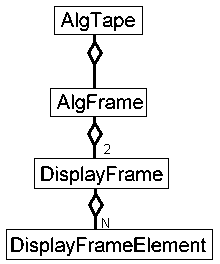
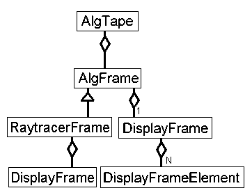

Recording an Animation

AlgTape holds a series of frames to be displayed when the user
records a scene, and then uses the Controller to request playback.
The AlgFrame class holds one frame in an animation sequence. It holds
a source code line number, a text message, image data to display, and viewing
information.
The DisplayFrame class holds a list of object and lights to display.
The DisplayFrameElement is an abstract class. Scene objects extend
this class to be stored in the DisplayFrame.

The RaytracerFrame class adds some efficiency to the recording. The scene
that the raytracer is rendering does not change. A DisplayFrame is created
once for each recording of a scene to hold this unchanging data.
There will be an occasional vector that needs to be stored, along with
viewing information- the viewpoint and a view plane distance.
These will be stored separately, and computed for each frame.
The Raytracer class records the algorithm in execution by embedding
commands in the code. When the user presses the record button, the Raytracer
will create an AlgTape. As the simulator executes the algorithm, it will
create and append a frame of data showing the current state. It stores the
line number executed, data for the wireframe, and a message. For example:
The Raytracer class overrides the draw_frame method, so the extra information
stored will be handled correctly.
normalize2(ray);
recording.append(new RaytracerFrame(
264, ray.toString(), null,static_scene_data,view_pt,view_d));
264 is the line of code that needs to be displayed in the CodePanel.
Ray.toString() is a call to a triple that represents a vector. It will return
a string representation of the vector after it has been normalized.
This will display the vector in the text box at the top of the applet.
Null means that there is no dynamic data to display in the wireframe- there are
no vectors to display. Static_scene_data is a list of objects and light sources
to display in the wireframe. View_pt and view_d tell where and how much to zoom
in on the scene.